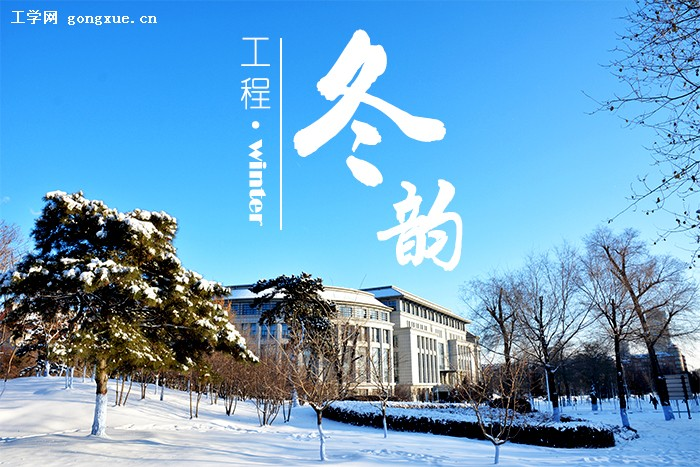
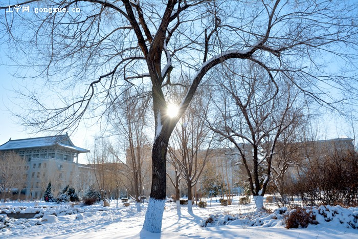
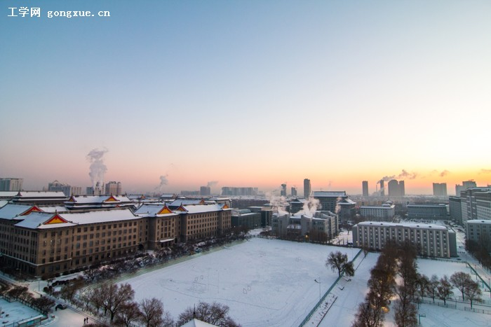

【镜头】工程冬韵
作者：赵琳琳 工学网制作中心 摄影：王康杰 金启威 郭荣真 纪昀皓 孙新成 黎子琳 文章来源：本站原创 点击数：3402 更新时间：2015/12/22 16:27:30 热 荐 ★★★
【编者按】岁末，冬至。在白雪映衬下的青檐碧瓦别有一番韵味，漫步校园，留在白色地毯上的那一串串脚印打破了冬日的静寂。落雪时节，银装素裹，镜头背后静静品味，才能感悟属于工程校园的文化韵味；细细聆听，方能捕捉到那充满青春气息的冬日恋歌。本期【镜头】带你走进校园深冬，欣赏冬日美景，领略不一样的冬韵雪趣。 同时，我们也欢迎你晒出你眼中的冬日之美。来稿请发gxzb@hrbeu.edu.cn，联系人：赵琳琳。请注明栏目投稿，并请标注您的联系方式。
图书馆门前枫叶林就像是一年四季的风向标，总能跟随四季的变换而展现不同的风姿，讲述着校园不同的故事。
天气晴朗的冬天，在阳光的照射下，天更蓝，雪也更加晶莹剔透了。暖阳，想起来遥远的家乡，想起温柔的母亲，心与冰雪一起融化。
走过校园的春夏秋冬，四季变换从未停歇。春的生机、夏的葱郁、秋的收获、冬的静谧，正如工程的万千学子从青涩历经成长、沉淀、成熟的整个过程。他们与这片土地息息相通，他们与这里的草木不可分割，他们在相同的地方演绎着各自的青春故事。
【编辑策划】吴丹丹 赵琳琳 【摄影记者】王康杰 金启威 郭荣真 纪昀皓 孙新成 黎子琳 【设计制作】侯万龙